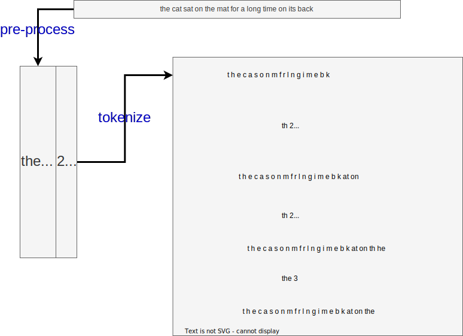

<!DOCTYPE html>

<html xmlns="http://www.w3.org/1999/xhtml" lang="" xml:lang="">

<head>
  <meta charset="utf-8"/>
  <meta name="viewport" content="width=device-width, initial-scale=1"/>
  <meta http-equiv="X-UA-Compatible" content="IE=Edge,chrome=1"/>
  <meta name="generator" content="distill" />

  <style type="text/css">
  /* Hide doc at startup (prevent jankiness while JS renders/transforms) */
  body {
    visibility: hidden;
  }
  </style>

 <!--radix_placeholder_import_source-->
 <!--/radix_placeholder_import_source-->

<style type="text/css">code{white-space: pre;}</style>
<style type="text/css" data-origin="pandoc">
pre > code.sourceCode { white-space: pre; position: relative; }
pre > code.sourceCode > span { display: inline-block; line-height: 1.25; }
pre > code.sourceCode > span:empty { height: 1.2em; }
.sourceCode { overflow: visible; }
code.sourceCode > span { color: inherit; text-decoration: inherit; }
div.sourceCode { margin: 1em 0; }
pre.sourceCode { margin: 0; }
@media screen {
div.sourceCode { overflow: auto; }
}
@media print {
pre > code.sourceCode { white-space: pre-wrap; }
pre > code.sourceCode > span { text-indent: -5em; padding-left: 5em; }
}
pre.numberSource code
  { counter-reset: source-line 0; }
pre.numberSource code > span
  { position: relative; left: -4em; counter-increment: source-line; }
pre.numberSource code > span > a:first-child::before
  { content: counter(source-line);
    position: relative; left: -1em; text-align: right; vertical-align: baseline;
    border: none; display: inline-block;
    -webkit-touch-callout: none; -webkit-user-select: none;
    -khtml-user-select: none; -moz-user-select: none;
    -ms-user-select: none; user-select: none;
    padding: 0 4px; width: 4em;
    background-color: #232629;
    color: #7a7c7d;
  }
pre.numberSource { margin-left: 3em; border-left: 1px solid #7a7c7d;  padding-left: 4px; }
div.sourceCode
  { color: #cfcfc2; background-color: #232629; }
@media screen {
pre > code.sourceCode > span > a:first-child::before { text-decoration: underline; }
}
code span { color: #cfcfc2; } /* Normal */
code span.al { color: #95da4c; background-color: #4d1f24; font-weight: bold; } /* Alert */
code span.an { color: #3f8058; } /* Annotation */
code span.at { color: #2980b9; } /* Attribute */
code span.bn { color: #f67400; } /* BaseN */
code span.bu { color: #7f8c8d; } /* BuiltIn */
code span.cf { color: #fdbc4b; font-weight: bold; } /* ControlFlow */
code span.ch { color: #3daee9; } /* Char */
code span.cn { color: #27aeae; font-weight: bold; } /* Constant */
code span.co { color: #7a7c7d; } /* Comment */
code span.cv { color: #7f8c8d; } /* CommentVar */
code span.do { color: #a43340; } /* Documentation */
code span.dt { color: #2980b9; } /* DataType */
code span.dv { color: #f67400; } /* DecVal */
code span.er { color: #da4453; text-decoration: underline; } /* Error */
code span.ex { color: #0099ff; font-weight: bold; } /* Extension */
code span.fl { color: #f67400; } /* Float */
code span.fu { color: #8e44ad; } /* Function */
code span.im { color: #27ae60; } /* Import */
code span.in { color: #c45b00; } /* Information */
code span.kw { color: #cfcfc2; font-weight: bold; } /* Keyword */
code span.op { color: #cfcfc2; } /* Operator */
code span.ot { color: #27ae60; } /* Other */
code span.pp { color: #27ae60; } /* Preprocessor */
code span.re { color: #2980b9; background-color: #153042; } /* RegionMarker */
code span.sc { color: #3daee9; } /* SpecialChar */
code span.ss { color: #da4453; } /* SpecialString */
code span.st { color: #f44f4f; } /* String */
code span.va { color: #27aeae; } /* Variable */
code span.vs { color: #da4453; } /* VerbatimString */
code span.wa { color: #da4453; } /* Warning */
</style>


  <!--radix_placeholder_meta_tags-->
  <title>A Primer on NLP for Clinicians: Part 1 - Tokenization</title>

  <meta property="description" itemprop="description" content="In this first part we talk about tokenization, the tool we use to make text readable by a machine."/>


  <!--  https://schema.org/Article -->
  <meta property="article:published" itemprop="datePublished" content="2022-02-12"/>
  <meta property="article:created" itemprop="dateCreated" content="2022-02-12"/>
  <meta name="article:author" content="Chris McMaster"/>

  <!--  https://developers.facebook.com/docs/sharing/webmasters#markup -->
  <meta property="og:title" content="A Primer on NLP for Clinicians: Part 1 - Tokenization"/>
  <meta property="og:type" content="article"/>
  <meta property="og:description" content="In this first part we talk about tokenization, the tool we use to make text readable by a machine."/>
  <meta property="og:locale" content="en_US"/>

  <!--  https://dev.twitter.com/cards/types/summary -->
  <meta property="twitter:card" content="summary"/>
  <meta property="twitter:title" content="A Primer on NLP for Clinicians: Part 1 - Tokenization"/>
  <meta property="twitter:description" content="In this first part we talk about tokenization, the tool we use to make text readable by a machine."/>

  <!--/radix_placeholder_meta_tags-->
  <!--radix_placeholder_rmarkdown_metadata-->

  <script type="text/json" id="radix-rmarkdown-metadata">
  {"type":"list","attributes":{"names":{"type":"character","attributes":{},"value":["title","description","author","date","output","draft","preview","css"]}},"value":[{"type":"character","attributes":{},"value":["A Primer on NLP for Clinicians: Part 1 - Tokenization"]},{"type":"character","attributes":{},"value":["In this first part we talk about tokenization, the tool we use to make text readable by a machine.\n"]},{"type":"list","attributes":{},"value":[{"type":"list","attributes":{"names":{"type":"character","attributes":{},"value":["name","url"]}},"value":[{"type":"character","attributes":{},"value":["Chris McMaster"]},{"type":"list","attributes":{"names":{"type":"character","attributes":{},"value":[]}},"value":[]}]}]},{"type":"character","attributes":{},"value":["2022-02-12"]},{"type":"list","attributes":{"names":{"type":"character","attributes":{},"value":["distill::distill_article"]}},"value":[{"type":"list","attributes":{"names":{"type":"character","attributes":{},"value":["self_contained","highlight","includes"]}},"value":[{"type":"logical","attributes":{},"value":[false]},{"type":"character","attributes":{},"value":["breezedark"]},{"type":"list","attributes":{"names":{"type":"character","attributes":{},"value":["in_header"]}},"value":[{"type":"character","attributes":{},"value":["banner.html"]}]}]}]},{"type":"logical","attributes":{},"value":[false]},{"type":"character","attributes":{},"value":["BPE.drawio.svg"]},{"type":"character","attributes":{},"value":["banner.css"]}]}
  </script>
  <!--/radix_placeholder_rmarkdown_metadata-->
  
  <script type="text/json" id="radix-resource-manifest">
  {"type":"character","attributes":{},"value":["banner.css","banner.html","banner.jpg","BPE.drawio.svg","how-machine-learning-can-read-your-notes_files/anchor-4.2.2/anchor.min.js","how-machine-learning-can-read-your-notes_files/bowser-1.9.3/bowser.min.js","how-machine-learning-can-read-your-notes_files/DiagrammeR-styles-0.2/styles.css","how-machine-learning-can-read-your-notes_files/distill-2.2.21/template.v2.js","how-machine-learning-can-read-your-notes_files/grViz-binding-1.0.8/grViz.js","how-machine-learning-can-read-your-notes_files/header-attrs-2.11/header-attrs.js","how-machine-learning-can-read-your-notes_files/htmlwidgets-1.5.4/htmlwidgets.js","how-machine-learning-can-read-your-notes_files/jquery-3.6.0/jquery-3.6.0.js","how-machine-learning-can-read-your-notes_files/jquery-3.6.0/jquery-3.6.0.min.js","how-machine-learning-can-read-your-notes_files/jquery-3.6.0/jquery-3.6.0.min.map","how-machine-learning-can-read-your-notes_files/popper-2.6.0/popper.min.js","how-machine-learning-can-read-your-notes_files/tippy-6.2.7/tippy-bundle.umd.min.js","how-machine-learning-can-read-your-notes_files/tippy-6.2.7/tippy-light-border.css","how-machine-learning-can-read-your-notes_files/tippy-6.2.7/tippy.css","how-machine-learning-can-read-your-notes_files/tippy-6.2.7/tippy.umd.min.js","how-machine-learning-can-read-your-notes_files/viz-1.8.2/viz.js","how-machine-learning-can-read-your-notes_files/webcomponents-2.0.0/webcomponents.js"]}
  </script>
  <!--radix_placeholder_navigation_in_header-->
  <!--/radix_placeholder_navigation_in_header-->
  <!--radix_placeholder_distill-->

  <style type="text/css">

  body {
    background-color: white;
  }

  .pandoc-table {
    width: 100%;
  }

  .pandoc-table>caption {
    margin-bottom: 10px;
  }

  .pandoc-table th:not([align]) {
    text-align: left;
  }

  .pagedtable-footer {
    font-size: 15px;
  }

  d-byline .byline {
    grid-template-columns: 2fr 2fr;
  }

  d-byline .byline h3 {
    margin-block-start: 1.5em;
  }

  d-byline .byline .authors-affiliations h3 {
    margin-block-start: 0.5em;
  }

  .authors-affiliations .orcid-id {
    width: 16px;
    height:16px;
    margin-left: 4px;
    margin-right: 4px;
    vertical-align: middle;
    padding-bottom: 2px;
  }

  d-title .dt-tags {
    margin-top: 1em;
    grid-column: text;
  }

  .dt-tags .dt-tag {
    text-decoration: none;
    display: inline-block;
    color: rgba(0,0,0,0.6);
    padding: 0em 0.4em;
    margin-right: 0.5em;
    margin-bottom: 0.4em;
    font-size: 70%;
    border: 1px solid rgba(0,0,0,0.2);
    border-radius: 3px;
    text-transform: uppercase;
    font-weight: 500;
  }

  d-article table.gt_table td,
  d-article table.gt_table th {
    border-bottom: none;
  }

  .html-widget {
    margin-bottom: 2.0em;
  }

  .l-screen-inset {
    padding-right: 16px;
  }

  .l-screen .caption {
    margin-left: 10px;
  }

  .shaded {
    background: rgb(247, 247, 247);
    padding-top: 20px;
    padding-bottom: 20px;
    border-top: 1px solid rgba(0, 0, 0, 0.1);
    border-bottom: 1px solid rgba(0, 0, 0, 0.1);
  }

  .shaded .html-widget {
    margin-bottom: 0;
    border: 1px solid rgba(0, 0, 0, 0.1);
  }

  .shaded .shaded-content {
    background: white;
  }

  .text-output {
    margin-top: 0;
    line-height: 1.5em;
  }

  .hidden {
    display: none !important;
  }

  d-article {
    padding-top: 2.5rem;
    padding-bottom: 30px;
  }

  d-appendix {
    padding-top: 30px;
  }

  d-article>p>img {
    width: 100%;
  }

  d-article h2 {
    margin: 1rem 0 1.5rem 0;
  }

  d-article h3 {
    margin-top: 1.5rem;
  }

  d-article iframe {
    border: 1px solid rgba(0, 0, 0, 0.1);
    margin-bottom: 2.0em;
    width: 100%;
  }

  /* Tweak code blocks */

  d-article div.sourceCode code,
  d-article pre code {
    font-family: Consolas, Monaco, 'Andale Mono', 'Ubuntu Mono', monospace;
  }

  d-article pre,
  d-article div.sourceCode,
  d-article div.sourceCode pre {
    overflow: auto;
  }

  d-article div.sourceCode {
    background-color: white;
  }

  d-article div.sourceCode pre {
    padding-left: 10px;
    font-size: 12px;
    border-left: 2px solid rgba(0,0,0,0.1);
  }

  d-article pre {
    font-size: 12px;
    color: black;
    background: none;
    margin-top: 0;
    text-align: left;
    white-space: pre;
    word-spacing: normal;
    word-break: normal;
    word-wrap: normal;
    line-height: 1.5;

    -moz-tab-size: 4;
    -o-tab-size: 4;
    tab-size: 4;

    -webkit-hyphens: none;
    -moz-hyphens: none;
    -ms-hyphens: none;
    hyphens: none;
  }

  d-article pre a {
    border-bottom: none;
  }

  d-article pre a:hover {
    border-bottom: none;
    text-decoration: underline;
  }

  d-article details {
    grid-column: text;
    margin-bottom: 0.8em;
  }

  @media(min-width: 768px) {

  d-article pre,
  d-article div.sourceCode,
  d-article div.sourceCode pre {
    overflow: visible !important;
  }

  d-article div.sourceCode pre {
    padding-left: 18px;
    font-size: 14px;
  }

  d-article pre {
    font-size: 14px;
  }

  }

  figure img.external {
    background: white;
    border: 1px solid rgba(0, 0, 0, 0.1);
    box-shadow: 0 1px 8px rgba(0, 0, 0, 0.1);
    padding: 18px;
    box-sizing: border-box;
  }

  /* CSS for d-contents */

  .d-contents {
    grid-column: text;
    color: rgba(0,0,0,0.8);
    font-size: 0.9em;
    padding-bottom: 1em;
    margin-bottom: 1em;
    padding-bottom: 0.5em;
    margin-bottom: 1em;
    padding-left: 0.25em;
    justify-self: start;
  }

  @media(min-width: 1000px) {
    .d-contents.d-contents-float {
      height: 0;
      grid-column-start: 1;
      grid-column-end: 4;
      justify-self: center;
      padding-right: 3em;
      padding-left: 2em;
    }
  }

  .d-contents nav h3 {
    font-size: 18px;
    margin-top: 0;
    margin-bottom: 1em;
  }

  .d-contents li {
    list-style-type: none
  }

  .d-contents nav > ul {
    padding-left: 0;
  }

  .d-contents ul {
    padding-left: 1em
  }

  .d-contents nav ul li {
    margin-top: 0.6em;
    margin-bottom: 0.2em;
  }

  .d-contents nav a {
    font-size: 13px;
    border-bottom: none;
    text-decoration: none
    color: rgba(0, 0, 0, 0.8);
  }

  .d-contents nav a:hover {
    text-decoration: underline solid rgba(0, 0, 0, 0.6)
  }

  .d-contents nav > ul > li > a {
    font-weight: 600;
  }

  .d-contents nav > ul > li > ul {
    font-weight: inherit;
  }

  .d-contents nav > ul > li > ul > li {
    margin-top: 0.2em;
  }


  .d-contents nav ul {
    margin-top: 0;
    margin-bottom: 0.25em;
  }

  .d-article-with-toc h2:nth-child(2) {
    margin-top: 0;
  }


  /* Figure */

  .figure {
    position: relative;
    margin-bottom: 2.5em;
    margin-top: 1.5em;
  }

  .figure img {
    width: 100%;
  }

  .figure .caption {
    color: rgba(0, 0, 0, 0.6);
    font-size: 12px;
    line-height: 1.5em;
  }

  .figure img.external {
    background: white;
    border: 1px solid rgba(0, 0, 0, 0.1);
    box-shadow: 0 1px 8px rgba(0, 0, 0, 0.1);
    padding: 18px;
    box-sizing: border-box;
  }

  .figure .caption a {
    color: rgba(0, 0, 0, 0.6);
  }

  .figure .caption b,
  .figure .caption strong, {
    font-weight: 600;
    color: rgba(0, 0, 0, 1.0);
  }

  /* Citations */

  d-article .citation {
    color: inherit;
    cursor: inherit;
  }

  div.hanging-indent{
    margin-left: 1em; text-indent: -1em;
  }

  /* Citation hover box */

  .tippy-box[data-theme~=light-border] {
    background-color: rgba(250, 250, 250, 0.95);
  }

  .tippy-content > p {
    margin-bottom: 0;
    padding: 2px;
  }


  /* Tweak 1000px media break to show more text */

  @media(min-width: 1000px) {
    .base-grid,
    distill-header,
    d-title,
    d-abstract,
    d-article,
    d-appendix,
    distill-appendix,
    d-byline,
    d-footnote-list,
    d-citation-list,
    distill-footer {
      grid-template-columns: [screen-start] 1fr [page-start kicker-start] 80px [middle-start] 50px [text-start kicker-end] 65px 65px 65px 65px 65px 65px 65px 65px [text-end gutter-start] 65px [middle-end] 65px [page-end gutter-end] 1fr [screen-end];
      grid-column-gap: 16px;
    }

    .grid {
      grid-column-gap: 16px;
    }

    d-article {
      font-size: 1.06rem;
      line-height: 1.7em;
    }
    figure .caption, .figure .caption, figure figcaption {
      font-size: 13px;
    }
  }

  @media(min-width: 1180px) {
    .base-grid,
    distill-header,
    d-title,
    d-abstract,
    d-article,
    d-appendix,
    distill-appendix,
    d-byline,
    d-footnote-list,
    d-citation-list,
    distill-footer {
      grid-template-columns: [screen-start] 1fr [page-start kicker-start] 60px [middle-start] 60px [text-start kicker-end] 60px 60px 60px 60px 60px 60px 60px 60px [text-end gutter-start] 60px [middle-end] 60px [page-end gutter-end] 1fr [screen-end];
      grid-column-gap: 32px;
    }

    .grid {
      grid-column-gap: 32px;
    }
  }


  /* Get the citation styles for the appendix (not auto-injected on render since
     we do our own rendering of the citation appendix) */

  d-appendix .citation-appendix,
  .d-appendix .citation-appendix {
    font-size: 11px;
    line-height: 15px;
    border-left: 1px solid rgba(0, 0, 0, 0.1);
    padding-left: 18px;
    border: 1px solid rgba(0,0,0,0.1);
    background: rgba(0, 0, 0, 0.02);
    padding: 10px 18px;
    border-radius: 3px;
    color: rgba(150, 150, 150, 1);
    overflow: hidden;
    margin-top: -12px;
    white-space: pre-wrap;
    word-wrap: break-word;
  }

  /* Include appendix styles here so they can be overridden */

  d-appendix {
    contain: layout style;
    font-size: 0.8em;
    line-height: 1.7em;
    margin-top: 60px;
    margin-bottom: 0;
    border-top: 1px solid rgba(0, 0, 0, 0.1);
    color: rgba(0,0,0,0.5);
    padding-top: 60px;
    padding-bottom: 48px;
  }

  d-appendix h3 {
    grid-column: page-start / text-start;
    font-size: 15px;
    font-weight: 500;
    margin-top: 1em;
    margin-bottom: 0;
    color: rgba(0,0,0,0.65);
  }

  d-appendix h3 + * {
    margin-top: 1em;
  }

  d-appendix ol {
    padding: 0 0 0 15px;
  }

  @media (min-width: 768px) {
    d-appendix ol {
      padding: 0 0 0 30px;
      margin-left: -30px;
    }
  }

  d-appendix li {
    margin-bottom: 1em;
  }

  d-appendix a {
    color: rgba(0, 0, 0, 0.6);
  }

  d-appendix > * {
    grid-column: text;
  }

  d-appendix > d-footnote-list,
  d-appendix > d-citation-list,
  d-appendix > distill-appendix {
    grid-column: screen;
  }

  /* Include footnote styles here so they can be overridden */

  d-footnote-list {
    contain: layout style;
  }

  d-footnote-list > * {
    grid-column: text;
  }

  d-footnote-list a.footnote-backlink {
    color: rgba(0,0,0,0.3);
    padding-left: 0.5em;
  }


  /* Anchor.js */

  .anchorjs-link {
    /*transition: all .25s linear; */
    text-decoration: none;
    border-bottom: none;
  }
  *:hover > .anchorjs-link {
    margin-left: -1.125em !important;
    text-decoration: none;
    border-bottom: none;
  }

  /* Social footer */

  .social_footer {
    margin-top: 30px;
    margin-bottom: 0;
    color: rgba(0,0,0,0.67);
  }

  .disqus-comments {
    margin-right: 30px;
  }

  .disqus-comment-count {
    border-bottom: 1px solid rgba(0, 0, 0, 0.4);
    cursor: pointer;
  }

  #disqus_thread {
    margin-top: 30px;
  }

  .article-sharing a {
    border-bottom: none;
    margin-right: 8px;
  }

  .article-sharing a:hover {
    border-bottom: none;
  }

  .sidebar-section.subscribe {
    font-size: 12px;
    line-height: 1.6em;
  }

  .subscribe p {
    margin-bottom: 0.5em;
  }


  .article-footer .subscribe {
    font-size: 15px;
    margin-top: 45px;
  }


  .sidebar-section.custom {
    font-size: 12px;
    line-height: 1.6em;
  }

  .custom p {
    margin-bottom: 0.5em;
  }

  /* Styles for listing layout (hide title) */
  .layout-listing d-title, .layout-listing .d-title {
    display: none;
  }

  /* Styles for posts lists (not auto-injected) */


  .posts-with-sidebar {
    padding-left: 45px;
    padding-right: 45px;
  }

  .posts-list .description h2,
  .posts-list .description p {
    font-family: -apple-system, BlinkMacSystemFont, "Segoe UI", Roboto, Oxygen, Ubuntu, Cantarell, "Fira Sans", "Droid Sans", "Helvetica Neue", Arial, sans-serif;
  }

  .posts-list .description h2 {
    font-weight: 700;
    border-bottom: none;
    padding-bottom: 0;
  }

  .posts-list h2.post-tag {
    border-bottom: 1px solid rgba(0, 0, 0, 0.2);
    padding-bottom: 12px;
  }
  .posts-list {
    margin-top: 60px;
    margin-bottom: 24px;
  }

  .posts-list .post-preview {
    text-decoration: none;
    overflow: hidden;
    display: block;
    border-bottom: 1px solid rgba(0, 0, 0, 0.1);
    padding: 24px 0;
  }

  .post-preview-last {
    border-bottom: none !important;
  }

  .posts-list .posts-list-caption {
    grid-column: screen;
    font-weight: 400;
  }

  .posts-list .post-preview h2 {
    margin: 0 0 6px 0;
    line-height: 1.2em;
    font-style: normal;
    font-size: 24px;
  }

  .posts-list .post-preview p {
    margin: 0 0 12px 0;
    line-height: 1.4em;
    font-size: 16px;
  }

  .posts-list .post-preview .thumbnail {
    box-sizing: border-box;
    margin-bottom: 24px;
    position: relative;
    max-width: 500px;
  }
  .posts-list .post-preview img {
    width: 100%;
    display: block;
  }

  .posts-list .metadata {
    font-size: 12px;
    line-height: 1.4em;
    margin-bottom: 18px;
  }

  .posts-list .metadata > * {
    display: inline-block;
  }

  .posts-list .metadata .publishedDate {
    margin-right: 2em;
  }

  .posts-list .metadata .dt-authors {
    display: block;
    margin-top: 0.3em;
    margin-right: 2em;
  }

  .posts-list .dt-tags {
    display: block;
    line-height: 1em;
  }

  .posts-list .dt-tags .dt-tag {
    display: inline-block;
    color: rgba(0,0,0,0.6);
    padding: 0.3em 0.4em;
    margin-right: 0.2em;
    margin-bottom: 0.4em;
    font-size: 60%;
    border: 1px solid rgba(0,0,0,0.2);
    border-radius: 3px;
    text-transform: uppercase;
    font-weight: 500;
  }

  .posts-list img {
    opacity: 1;
  }

  .posts-list img[data-src] {
    opacity: 0;
  }

  .posts-more {
    clear: both;
  }


  .posts-sidebar {
    font-size: 16px;
  }

  .posts-sidebar h3 {
    font-size: 16px;
    margin-top: 0;
    margin-bottom: 0.5em;
    font-weight: 400;
    text-transform: uppercase;
  }

  .sidebar-section {
    margin-bottom: 30px;
  }

  .categories ul {
    list-style-type: none;
    margin: 0;
    padding: 0;
  }

  .categories li {
    color: rgba(0, 0, 0, 0.8);
    margin-bottom: 0;
  }

  .categories li>a {
    border-bottom: none;
  }

  .categories li>a:hover {
    border-bottom: 1px solid rgba(0, 0, 0, 0.4);
  }

  .categories .active {
    font-weight: 600;
  }

  .categories .category-count {
    color: rgba(0, 0, 0, 0.4);
  }


  @media(min-width: 768px) {
    .posts-list .post-preview h2 {
      font-size: 26px;
    }
    .posts-list .post-preview .thumbnail {
      float: right;
      width: 30%;
      margin-bottom: 0;
    }
    .posts-list .post-preview .description {
      float: left;
      width: 45%;
    }
    .posts-list .post-preview .metadata {
      float: left;
      width: 20%;
      margin-top: 8px;
    }
    .posts-list .post-preview p {
      margin: 0 0 12px 0;
      line-height: 1.5em;
      font-size: 16px;
    }
    .posts-with-sidebar .posts-list {
      float: left;
      width: 75%;
    }
    .posts-with-sidebar .posts-sidebar {
      float: right;
      width: 20%;
      margin-top: 60px;
      padding-top: 24px;
      padding-bottom: 24px;
    }
  }


  /* Improve display for browsers without grid (IE/Edge <= 15) */

  .downlevel {
    line-height: 1.6em;
    font-family: -apple-system, BlinkMacSystemFont, "Segoe UI", Roboto, Oxygen, Ubuntu, Cantarell, "Fira Sans", "Droid Sans", "Helvetica Neue", Arial, sans-serif;
    margin: 0;
  }

  .downlevel .d-title {
    padding-top: 6rem;
    padding-bottom: 1.5rem;
  }

  .downlevel .d-title h1 {
    font-size: 50px;
    font-weight: 700;
    line-height: 1.1em;
    margin: 0 0 0.5rem;
  }

  .downlevel .d-title p {
    font-weight: 300;
    font-size: 1.2rem;
    line-height: 1.55em;
    margin-top: 0;
  }

  .downlevel .d-byline {
    padding-top: 0.8em;
    padding-bottom: 0.8em;
    font-size: 0.8rem;
    line-height: 1.8em;
  }

  .downlevel .section-separator {
    border: none;
    border-top: 1px solid rgba(0, 0, 0, 0.1);
  }

  .downlevel .d-article {
    font-size: 1.06rem;
    line-height: 1.7em;
    padding-top: 1rem;
    padding-bottom: 2rem;
  }


  .downlevel .d-appendix {
    padding-left: 0;
    padding-right: 0;
    max-width: none;
    font-size: 0.8em;
    line-height: 1.7em;
    margin-bottom: 0;
    color: rgba(0,0,0,0.5);
    padding-top: 40px;
    padding-bottom: 48px;
  }

  .downlevel .footnotes ol {
    padding-left: 13px;
  }

  .downlevel .base-grid,
  .downlevel .distill-header,
  .downlevel .d-title,
  .downlevel .d-abstract,
  .downlevel .d-article,
  .downlevel .d-appendix,
  .downlevel .distill-appendix,
  .downlevel .d-byline,
  .downlevel .d-footnote-list,
  .downlevel .d-citation-list,
  .downlevel .distill-footer,
  .downlevel .appendix-bottom,
  .downlevel .posts-container {
    padding-left: 40px;
    padding-right: 40px;
  }

  @media(min-width: 768px) {
    .downlevel .base-grid,
    .downlevel .distill-header,
    .downlevel .d-title,
    .downlevel .d-abstract,
    .downlevel .d-article,
    .downlevel .d-appendix,
    .downlevel .distill-appendix,
    .downlevel .d-byline,
    .downlevel .d-footnote-list,
    .downlevel .d-citation-list,
    .downlevel .distill-footer,
    .downlevel .appendix-bottom,
    .downlevel .posts-container {
    padding-left: 150px;
    padding-right: 150px;
    max-width: 900px;
  }
  }

  .downlevel pre code {
    display: block;
    border-left: 2px solid rgba(0, 0, 0, .1);
    padding: 0 0 0 20px;
    font-size: 14px;
  }

  .downlevel code, .downlevel pre {
    color: black;
    background: none;
    font-family: Consolas, Monaco, 'Andale Mono', 'Ubuntu Mono', monospace;
    text-align: left;
    white-space: pre;
    word-spacing: normal;
    word-break: normal;
    word-wrap: normal;
    line-height: 1.5;

    -moz-tab-size: 4;
    -o-tab-size: 4;
    tab-size: 4;

    -webkit-hyphens: none;
    -moz-hyphens: none;
    -ms-hyphens: none;
    hyphens: none;
  }

  .downlevel .posts-list .post-preview {
    color: inherit;
  }


  </style>

  <script type="application/javascript">

  function is_downlevel_browser() {
    if (bowser.isUnsupportedBrowser({ msie: "12", msedge: "16"},
                                   window.navigator.userAgent)) {
      return true;
    } else {
      return window.load_distill_framework === undefined;
    }
  }

  // show body when load is complete
  function on_load_complete() {

    // add anchors
    if (window.anchors) {
      window.anchors.options.placement = 'left';
      window.anchors.add('d-article > h2, d-article > h3, d-article > h4, d-article > h5');
    }


    // set body to visible
    document.body.style.visibility = 'visible';

    // force redraw for leaflet widgets
    if (window.HTMLWidgets) {
      var maps = window.HTMLWidgets.findAll(".leaflet");
      $.each(maps, function(i, el) {
        var map = this.getMap();
        map.invalidateSize();
        map.eachLayer(function(layer) {
          if (layer instanceof L.TileLayer)
            layer.redraw();
        });
      });
    }

    // trigger 'shown' so htmlwidgets resize
    $('d-article').trigger('shown');
  }

  function init_distill() {

    init_common();

    // create front matter
    var front_matter = $('<d-front-matter></d-front-matter>');
    $('#distill-front-matter').wrap(front_matter);

    // create d-title
    $('.d-title').changeElementType('d-title');

    // create d-byline
    var byline = $('<d-byline></d-byline>');
    $('.d-byline').replaceWith(byline);

    // create d-article
    var article = $('<d-article></d-article>');
    $('.d-article').wrap(article).children().unwrap();

    // move posts container into article
    $('.posts-container').appendTo($('d-article'));

    // create d-appendix
    $('.d-appendix').changeElementType('d-appendix');

    // flag indicating that we have appendix items
    var appendix = $('.appendix-bottom').children('h3').length > 0;

    // replace footnotes with <d-footnote>
    $('.footnote-ref').each(function(i, val) {
      appendix = true;
      var href = $(this).attr('href');
      var id = href.replace('#', '');
      var fn = $('#' + id);
      var fn_p = $('#' + id + '>p');
      fn_p.find('.footnote-back').remove();
      var text = fn_p.html();
      var dtfn = $('<d-footnote></d-footnote>');
      dtfn.html(text);
      $(this).replaceWith(dtfn);
    });
    // remove footnotes
    $('.footnotes').remove();

    // move refs into #references-listing
    $('#references-listing').replaceWith($('#refs'));

    $('h1.appendix, h2.appendix').each(function(i, val) {
      $(this).changeElementType('h3');
    });
    $('h3.appendix').each(function(i, val) {
      var id = $(this).attr('id');
      $('.d-contents a[href="#' + id + '"]').parent().remove();
      appendix = true;
      $(this).nextUntil($('h1, h2, h3')).addBack().appendTo($('d-appendix'));
    });

    // show d-appendix if we have appendix content
    $("d-appendix").css('display', appendix ? 'grid' : 'none');

    // localize layout chunks to just output
    $('.layout-chunk').each(function(i, val) {

      // capture layout
      var layout = $(this).attr('data-layout');

      // apply layout to markdown level block elements
      var elements = $(this).children().not('details, div.sourceCode, pre, script');
      elements.each(function(i, el) {
        var layout_div = $('<div class="' + layout + '"></div>');
        if (layout_div.hasClass('shaded')) {
          var shaded_content = $('<div class="shaded-content"></div>');
          $(this).wrap(shaded_content);
          $(this).parent().wrap(layout_div);
        } else {
          $(this).wrap(layout_div);
        }
      });


      // unwrap the layout-chunk div
      $(this).children().unwrap();
    });

    // remove code block used to force  highlighting css
    $('.distill-force-highlighting-css').parent().remove();

    // remove empty line numbers inserted by pandoc when using a
    // custom syntax highlighting theme
    $('code.sourceCode a:empty').remove();

    // load distill framework
    load_distill_framework();

    // wait for window.distillRunlevel == 4 to do post processing
    function distill_post_process() {

      if (!window.distillRunlevel || window.distillRunlevel < 4)
        return;

      // hide author/affiliations entirely if we have no authors
      var front_matter = JSON.parse($("#distill-front-matter").html());
      var have_authors = front_matter.authors && front_matter.authors.length > 0;
      if (!have_authors)
        $('d-byline').addClass('hidden');

      // article with toc class
      $('.d-contents').parent().addClass('d-article-with-toc');

      // strip links that point to #
      $('.authors-affiliations').find('a[href="#"]').removeAttr('href');

      // add orcid ids
      $('.authors-affiliations').find('.author').each(function(i, el) {
        var orcid_id = front_matter.authors[i].orcidID;
        if (orcid_id) {
          var a = $('<a></a>');
          a.attr('href', 'https://orcid.org/' + orcid_id);
          var img = $('</img>');
          img.addClass('orcid-id');
          img.attr('alt', 'ORCID ID');
          img.attr('src','');
          a.append(img);
          $(this).append(a);
        }
      });

      // hide elements of author/affiliations grid that have no value
      function hide_byline_column(caption) {
        $('d-byline').find('h3:contains("' + caption + '")').parent().css('visibility', 'hidden');
      }

      // affiliations
      var have_affiliations = false;
      for (var i = 0; i<front_matter.authors.length; ++i) {
        var author = front_matter.authors[i];
        if (author.affiliation !== "&nbsp;") {
          have_affiliations = true;
          break;
        }
      }
      if (!have_affiliations)
        $('d-byline').find('h3:contains("Affiliations")').css('visibility', 'hidden');

      // published date
      if (!front_matter.publishedDate)
        hide_byline_column("Published");

      // document object identifier
      var doi = $('d-byline').find('h3:contains("DOI")');
      var doi_p = doi.next().empty();
      if (!front_matter.doi) {
        // if we have a citation and valid citationText then link to that
        if ($('#citation').length > 0 && front_matter.citationText) {
          doi.html('Citation');
          $('<a href="#citation"></a>')
            .text(front_matter.citationText)
            .appendTo(doi_p);
        } else {
          hide_byline_column("DOI");
        }
      } else {
        $('<a></a>')
           .attr('href', "https://doi.org/" + front_matter.doi)
           .html(front_matter.doi)
           .appendTo(doi_p);
      }

       // change plural form of authors/affiliations
      if (front_matter.authors.length === 1) {
        var grid = $('.authors-affiliations');
        grid.children('h3:contains("Authors")').text('Author');
        grid.children('h3:contains("Affiliations")').text('Affiliation');
      }

      // remove d-appendix and d-footnote-list local styles
      $('d-appendix > style:first-child').remove();
      $('d-footnote-list > style:first-child').remove();

      // move appendix-bottom entries to the bottom
      $('.appendix-bottom').appendTo('d-appendix').children().unwrap();
      $('.appendix-bottom').remove();

      // hoverable references
      $('span.citation[data-cites]').each(function() {
        var refs = $(this).attr('data-cites').split(" ");
        var refHtml = refs.map(function(ref) {
          return "<p>" + $('#ref-' + ref).html() + "</p>";
        }).join("\n");
        window.tippy(this, {
          allowHTML: true,
          content: refHtml,
          maxWidth: 500,
          interactive: true,
          interactiveBorder: 10,
          theme: 'light-border',
          placement: 'bottom-start'
        });
      });

      // clear polling timer
      clearInterval(tid);

      // show body now that everything is ready
      on_load_complete();
    }

    var tid = setInterval(distill_post_process, 50);
    distill_post_process();

  }

  function init_downlevel() {

    init_common();

     // insert hr after d-title
    $('.d-title').after($('<hr class="section-separator"/>'));

    // check if we have authors
    var front_matter = JSON.parse($("#distill-front-matter").html());
    var have_authors = front_matter.authors && front_matter.authors.length > 0;

    // manage byline/border
    if (!have_authors)
      $('.d-byline').remove();
    $('.d-byline').after($('<hr class="section-separator"/>'));
    $('.d-byline a').remove();

    // remove toc
    $('.d-contents').remove();

    // move appendix elements
    $('h1.appendix, h2.appendix').each(function(i, val) {
      $(this).changeElementType('h3');
    });
    $('h3.appendix').each(function(i, val) {
      $(this).nextUntil($('h1, h2, h3')).addBack().appendTo($('.d-appendix'));
    });


    // inject headers into references and footnotes
    var refs_header = $('<h3></h3>');
    refs_header.text('References');
    $('#refs').prepend(refs_header);

    var footnotes_header = $('<h3></h3');
    footnotes_header.text('Footnotes');
    $('.footnotes').children('hr').first().replaceWith(footnotes_header);

    // move appendix-bottom entries to the bottom
    $('.appendix-bottom').appendTo('.d-appendix').children().unwrap();
    $('.appendix-bottom').remove();

    // remove appendix if it's empty
    if ($('.d-appendix').children().length === 0)
      $('.d-appendix').remove();

    // prepend separator above appendix
    $('.d-appendix').before($('<hr class="section-separator" style="clear: both"/>'));

    // trim code
    $('pre>code').each(function(i, val) {
      $(this).html($.trim($(this).html()));
    });

    // move posts-container right before article
    $('.posts-container').insertBefore($('.d-article'));

    $('body').addClass('downlevel');

    on_load_complete();
  }


  function init_common() {

    // jquery plugin to change element types
    (function($) {
      $.fn.changeElementType = function(newType) {
        var attrs = {};

        $.each(this[0].attributes, function(idx, attr) {
          attrs[attr.nodeName] = attr.nodeValue;
        });

        this.replaceWith(function() {
          return $("<" + newType + "/>", attrs).append($(this).contents());
        });
      };
    })(jQuery);

    // prevent underline for linked images
    $('a > img').parent().css({'border-bottom' : 'none'});

    // mark non-body figures created by knitr chunks as 100% width
    $('.layout-chunk').each(function(i, val) {
      var figures = $(this).find('img, .html-widget');
      if ($(this).attr('data-layout') !== "l-body") {
        figures.css('width', '100%');
      } else {
        figures.css('max-width', '100%');
        figures.filter("[width]").each(function(i, val) {
          var fig = $(this);
          fig.css('width', fig.attr('width') + 'px');
        });

      }
    });

    // auto-append index.html to post-preview links in file: protocol
    // and in rstudio ide preview
    $('.post-preview').each(function(i, val) {
      if (window.location.protocol === "file:")
        $(this).attr('href', $(this).attr('href') + "index.html");
    });

    // get rid of index.html references in header
    if (window.location.protocol !== "file:") {
      $('.distill-site-header a[href]').each(function(i,val) {
        $(this).attr('href', $(this).attr('href').replace("index.html", "./"));
      });
    }

    // add class to pandoc style tables
    $('tr.header').parent('thead').parent('table').addClass('pandoc-table');
    $('.kable-table').children('table').addClass('pandoc-table');

    // add figcaption style to table captions
    $('caption').parent('table').addClass("figcaption");

    // initialize posts list
    if (window.init_posts_list)
      window.init_posts_list();

    // implmement disqus comment link
    $('.disqus-comment-count').click(function() {
      window.headroom_prevent_pin = true;
      $('#disqus_thread').toggleClass('hidden');
      if (!$('#disqus_thread').hasClass('hidden')) {
        var offset = $(this).offset();
        $(window).resize();
        $('html, body').animate({
          scrollTop: offset.top - 35
        });
      }
    });
  }

  document.addEventListener('DOMContentLoaded', function() {
    if (is_downlevel_browser())
      init_downlevel();
    else
      window.addEventListener('WebComponentsReady', init_distill);
  });

  </script>

  <!--/radix_placeholder_distill-->
  <script src="how-machine-learning-can-read-your-notes_files/header-attrs-2.11/header-attrs.js"></script>
  <script src="how-machine-learning-can-read-your-notes_files/htmlwidgets-1.5.4/htmlwidgets.js"></script>
  <script src="how-machine-learning-can-read-your-notes_files/viz-1.8.2/viz.js"></script>
  <link href="how-machine-learning-can-read-your-notes_files/DiagrammeR-styles-0.2/styles.css" rel="stylesheet" />
  <script src="how-machine-learning-can-read-your-notes_files/grViz-binding-1.0.8/grViz.js"></script>
  <script src="how-machine-learning-can-read-your-notes_files/jquery-3.6.0/jquery-3.6.0.min.js"></script>
  <script src="how-machine-learning-can-read-your-notes_files/popper-2.6.0/popper.min.js"></script>
  <link href="how-machine-learning-can-read-your-notes_files/tippy-6.2.7/tippy.css" rel="stylesheet" />
  <link href="how-machine-learning-can-read-your-notes_files/tippy-6.2.7/tippy-light-border.css" rel="stylesheet" />
  <script src="how-machine-learning-can-read-your-notes_files/tippy-6.2.7/tippy.umd.min.js"></script>
  <script src="how-machine-learning-can-read-your-notes_files/anchor-4.2.2/anchor.min.js"></script>
  <script src="how-machine-learning-can-read-your-notes_files/bowser-1.9.3/bowser.min.js"></script>
  <script src="how-machine-learning-can-read-your-notes_files/webcomponents-2.0.0/webcomponents.js"></script>
  <script src="how-machine-learning-can-read-your-notes_files/distill-2.2.21/template.v2.js"></script>
  <!--radix_placeholder_site_in_header-->
  <!--/radix_placeholder_site_in_header-->
  <!DOCTYPE html>
  <html lang="en" dir="ltr">
    <head>
      <meta charset="utf-8">
      <title></title>
    </head>
    <body>
      <div class="article-header">
        
      </div>
      </a>
    </body>
  </html>

  <link rel="stylesheet" href="banner.css" type="text/css"/>

</head>

<body>

<!--radix_placeholder_front_matter-->

<script id="distill-front-matter" type="text/json">
{"title":"A Primer on NLP for Clinicians: Part 1 - Tokenization","description":"In this first part we talk about tokenization, the tool we use to make text readable by a machine.","authors":[{"author":"Chris McMaster","authorURL":{},"affiliation":"&nbsp;","affiliationURL":"#","orcidID":""}],"publishedDate":"2022-02-12T00:00:00.000+11:00","citationText":"McMaster, 2022"}
</script>

<!--/radix_placeholder_front_matter-->
<!--radix_placeholder_navigation_before_body-->
<!--/radix_placeholder_navigation_before_body-->
<!--radix_placeholder_site_before_body-->
<!--/radix_placeholder_site_before_body-->

<div class="d-title">
<h1>A Primer on NLP for Clinicians: Part 1 - Tokenization</h1>
<!--radix_placeholder_categories-->
<!--/radix_placeholder_categories-->
<p><p>In this first part we talk about tokenization, the tool we use to make text readable by a machine.</p></p>
</div>

<div class="d-byline">
  Chris McMaster true 
  
<br/>2022-02-12
</div>

<div class="d-article">
<h1 id="whats-this-and-why-should-i-care">What’s this and why should I care?</h1>
<p>If you’re reading this, I presume you have at least a cursory interest in natural language processing (NLP). Either that or I have made you read this. Regardless, this primer on NLP for clinicians will show you how modern NLP works and how it can be applied in clinical medicine. The reasons <em>why</em> are almost too many to mention. Aside from the interesting knowledge we might gain, NLP is an extremely practical tool. We spend our lives reading text — journals, articles, progress notes, you name it, we’re constantly reading to absorb new information. So much of this can be simplified, streamlined, automated and improved with NLP. From conducting audits to summarising the latest literature, NLP can make our lives easier. Hopefully this sparks some ideas and becomes the start of that path for you. We will start with tokenization.</p>
<div class="layout-chunk" data-layout="l-body">
<div id="htmlwidget-c432b1a777ca38cd1bd9" style="width:624px;height:200px;" class="grViz html-widget"></div>
<script type="application/json" data-for="htmlwidget-c432b1a777ca38cd1bd9">{"x":{"diagram":"digraph flowchart {\n  node [fontname = arial, shape = oval, color = LightSalmon, style = filled]\n  tab1 [label = \"Tokenization\"]\n  \n  node [fontname = arial, shape = oval, color = Grey]\n  tab2 [label = \"Embeddings\"]\n  tab3 [label = \"Transformers\"]\n  \n  tab1 -> tab2 -> tab3;\n}","config":{"engine":"dot","options":null}},"evals":[],"jsHooks":[]}</script>
</div>
<h1 id="tokenization">Tokenization</h1>
<p>Let’s pretend we have a large number of clinical notes (we will refer to this as a <strong><em>corpus</em></strong>) and we want to represent those in such a way that they can be used used by a machine learning model. We can think about this by examining the first snippet from our corpus (there are 10 other brief notes that I won’t show):</p>
<div class="layout-chunk" data-layout="l-body">
<pre><code>(&#39;HOPC: 2 weeks of progressive exertional dysponea, now SOB at rest w/ maximum &#39;
 &#39;ET ~10m. Periphral oedema w/ pitting above knees bilaterally.&#39;)</code></pre>
</div>
<p>One natural way to turn this text into data might be to split it every time we encounter a space, essentially splitting into words. For example:</p>
<div class="layout-chunk" data-layout="l-body">
<pre><code>[&#39;HOPC:&#39;, &#39;2&#39;, &#39;weeks&#39;, &#39;of&#39;, &#39;progressive&#39;, &#39;exertional&#39;, &#39;dysponea,&#39;, &#39;now&#39;,
&#39;SOB&#39;, &#39;at&#39;, &#39;rest&#39;, &#39;w/&#39;, &#39;maximum&#39;, &#39;ET&#39;, &#39;~10m.&#39;, &#39;Periphral&#39;, &#39;oedema&#39;,
&#39;w/&#39;, &#39;pitting&#39;, &#39;above&#39;, &#39;knees&#39;, &#39;bilaterally.&#39;]</code></pre>
</div>
<p>Each word is a data point, we could even convert this into a table and feed it in that way. Some cleverer ideas involve counting the frequency of each word and using that data (see <a href="https://en.wikipedia.org/wiki/Tf%E2%80%93idf">tf-idf</a>, although import information is lost in this process, namely the position of each word).</p>
<p>Our simple tokenizer has problems, particularly as the number of documents begins to explode and therefore the number of unique words becomes unreasonably large. Additionally, each misspelling will be its own unique token, which might be okay for very common typos, but we would ideally like some way of coping with small variations in spelling that might occur less frequently.</p>
<p>Subword tokenization refers to a group of tokenization techniques that allow us to optimally tokenize a corpus of text with a limited vocabulary (where we get to choose how large that is). We’re going to explain this using the simplest subword tokenizer, <strong>byte pair encoding (BPE)</strong>.</p>
<h2 id="bype-pair-encoding">Bype Pair Encoding</h2>
<p>We will get into the details of BPE later. For now, if you’re following along with the code we will import our libraries and instantiate a BPE.</p>
<div class="layout-chunk" data-layout="l-body">
<details>
<summary>
Show code
</summary>
<div class="sourceCode" id="cb3"><pre class="sourceCode python bg-success"><code class="sourceCode python"><span id="cb3-1"><a href="#cb3-1" aria-hidden="true" tabindex="-1"></a><span class="im">from</span> tokenizers <span class="im">import</span> Tokenizer</span>
<span id="cb3-2"><a href="#cb3-2" aria-hidden="true" tabindex="-1"></a><span class="im">from</span> tokenizers.models <span class="im">import</span> BPE</span>
<span id="cb3-3"><a href="#cb3-3" aria-hidden="true" tabindex="-1"></a><span class="im">from</span> tokenizers.normalizers <span class="im">import</span> NFD, Lowercase, StripAccents, Sequence</span>
<span id="cb3-4"><a href="#cb3-4" aria-hidden="true" tabindex="-1"></a><span class="im">from</span> tokenizers.pre_tokenizers <span class="im">import</span> Whitespace</span>
<span id="cb3-5"><a href="#cb3-5" aria-hidden="true" tabindex="-1"></a><span class="im">from</span> tokenizers.trainers <span class="im">import</span> BpeTrainer</span>
<span id="cb3-6"><a href="#cb3-6" aria-hidden="true" tabindex="-1"></a></span>
<span id="cb3-7"><a href="#cb3-7" aria-hidden="true" tabindex="-1"></a>tokenizer <span class="op">=</span> Tokenizer(BPE())</span></code></pre></div>
</details>
</div>
<p>Before we can train a BPE algorithm, we need to clean up our text. We will do this in two steps:</p>
<ol type="1">
<li><p>Normalization</p></li>
<li><p>Pre-processing</p></li>
</ol>
<h3 id="normalization">Normalization</h3>
<p>Normalization is the process of removing and replacing characters in text to reduce it to a standard set of characters. This often involves several steps and might include the following:</p>
<ul>
<li><p>Removing unwanted characters (e.g. emoji or cyrillic characters)</p></li>
<li><p><a href="https://unicode.org/reports/tr15/">Normalizing unicode characters</a> by decomposing them. A common example is accented letters, which might be replaced with their unaccented form plus the accent (e.g. replace Á with A´)</p></li>
<li><p>Replacing all uppercase letters with their lowercase form (e.g. replace B with b)</p></li>
<li><p>Removing those accents created through unicode normalisation</p></li>
</ul>
<p>Here, we create a normalization schema by stringing together NFD (a unicode normalization standard - we don’t need to know the details), the lowercase function and a function to remove those accents.</p>
<div class="layout-chunk" data-layout="l-body">
<div class="sourceCode" id="cb4"><pre class="sourceCode python bg-success"><code class="sourceCode python"><span id="cb4-1"><a href="#cb4-1" aria-hidden="true" tabindex="-1"></a>tokenizer.normalizer <span class="op">=</span> Sequence([NFD(), Lowercase(), StripAccents()])</span></code></pre></div>
</div>
<p>This is what our string looks like after normalization:</p>
<div class="layout-chunk" data-layout="l-body">
<pre><code>(&#39;hopc: 2 weeks of progressive exertional dysponea, now sob at rest w/ maximum &#39;
 &#39;et ~10m. periphral oedema w/ pitting above knees bilaterally.&#39;)</code></pre>
</div>
<h3 id="pre-processing">Pre-processing</h3>
<p>We can now pre-process our text — that is, we can split it into parts. These parts are the maximum units we can tokenize, with the rules that each part is composed of 1 or more tokens, but no token can span between parts. If you you think about it, what we’re really describing here are words — we’re going to split our text into words. We will do this by splitting our text every time we encounter whitespace, although you can also include rules about punctuation.</p>
<div class="layout-chunk" data-layout="l-body">
<div class="sourceCode" id="cb6"><pre class="sourceCode python bg-success"><code class="sourceCode python"><span id="cb6-1"><a href="#cb6-1" aria-hidden="true" tabindex="-1"></a>tokenizer.pre_tokenizer <span class="op">=</span> Whitespace()</span></code></pre></div>
</div>
<p>So here our text becomes:</p>
<div class="layout-chunk" data-layout="l-body">
<pre><code>(&#39;hopc&#39;, &#39;:&#39;, &#39;2&#39;, &#39;weeks&#39;, &#39;of&#39;, &#39;progressive&#39;, &#39;exertional&#39;, &#39;dysponea&#39;, &#39;,&#39;,
&#39;now&#39;, &#39;sob&#39;, &#39;at&#39;, &#39;rest&#39;, &#39;w&#39;, &#39;/&#39;, &#39;maximum&#39;, &#39;et&#39;, &#39;~&#39;, &#39;10m&#39;, &#39;.&#39;,
&#39;periphral&#39;, &#39;oedema&#39;, &#39;w&#39;, &#39;/&#39;, &#39;pitting&#39;, &#39;above&#39;, &#39;knees&#39;, &#39;bilaterally&#39;,
&#39;.&#39;)</code></pre>
</div>
<h3 id="bpe">BPE</h3>
<p>We’re now ready to train a tokenizer, so lets try and understand the algorithm.</p>
<p>After pre-processing, we count the number of instances for each word — this is just going to help us with calculations down the line. We then begin with a candidate vocabulary consisting of every character that appears at least once in our corpus. We then look at token pairs, that is two consecutive tokens occurring within a word. We count the number of times each token pair appears. The token pair that appears most frequently gets added to our vocabulary (in this example <em>at</em> and <em>on</em> share the highest frequency and in reality adding each to our vocabulary occurs in 2 separate steps, condensed to 1 step here for brevity). This process then repeats, with our new tokens also counted at the next.</p>
<p></p>
<p>This process continues until we either run out of new tokens to create (i.e. each word is its own token), or we reach our maximum vocabulary size.</p>
<p>We can now see what this looks like with our corpus. Our corpus is very small, so we will use a vocabulary of size 150, although for an appropriately large corpus we usually use a vocabulary in the 10s of thousands.</p>
<div class="layout-chunk" data-layout="l-body">
<div class="sourceCode" id="cb8"><pre class="sourceCode python bg-success"><code class="sourceCode python"><span id="cb8-1"><a href="#cb8-1" aria-hidden="true" tabindex="-1"></a>trainer <span class="op">=</span> BpeTrainer(vocab_size<span class="op">=</span><span class="dv">150</span>)</span>
<span id="cb8-2"><a href="#cb8-2" aria-hidden="true" tabindex="-1"></a>tokenizer.train_from_iterator(notes, trainer)</span></code></pre></div>
</div>
<p>We can look at the first 10 tokens in the vocabulary:</p>
<div class="layout-chunk" data-layout="l-body">
<pre><code>[&#39;che&#39;, &#39;q&#39;, &#39;t&#39;, &#39;8&#39;, &#39;ms&#39;, &#39;00&#39;, &#39;nec&#39;, &#39;ema&#39;, &#39;pone&#39;, &#39;y&#39;]</code></pre>
</div>
<p>As you can see, these aren’t words. They are parts of words, carefully chosen by our algorithm to tokenize the most frequently occurring parts within our vocabulary limit.</p>
<p>Finally, we can see what our text looks like after tokenization:</p>
<div class="layout-chunk" data-layout="l-body">
<pre><code>[&#39;h&#39;, &#39;o&#39;, &#39;p&#39;, &#39;c&#39;, &#39;:&#39;, &#39;2&#39;, &#39;week&#39;, &#39;s&#39;, &#39;of&#39;, &#39;pro&#39;, &#39;gres&#39;, &#39;si&#39;, &#39;ve&#39;,
&#39;exer&#39;, &#39;tion&#39;, &#39;al&#39;, &#39;dys&#39;, &#39;pone&#39;, &#39;a&#39;, &#39;,&#39;, &#39;now&#39;, &#39;sob&#39;, &#39;at&#39;, &#39;rest&#39;, &#39;w&#39;,
&#39;/&#39;, &#39;ma&#39;, &#39;x&#39;, &#39;im&#39;, &#39;u&#39;, &#39;m&#39;, &#39;e&#39;, &#39;t&#39;, &#39;~&#39;, &#39;1&#39;, &#39;0m&#39;, &#39;.&#39;, &#39;per&#39;, &#39;ip&#39;, &#39;h&#39;,
&#39;ral&#39;, &#39;oedema&#39;, &#39;w&#39;, &#39;/&#39;, &#39;pit&#39;, &#39;ting&#39;, &#39;abo&#39;, &#39;ve&#39;, &#39;kn&#39;, &#39;ees&#39;, &#39;b&#39;, &#39;i&#39;,
&#39;l&#39;, &#39;at&#39;, &#39;erally&#39;, &#39;.&#39;]</code></pre>
</div>
<p>Actually, this isn’t what the machine learning model sees. Each token in our vocabulary is represented by a number, so this is what it will see:</p>
<div class="layout-chunk" data-layout="l-body">
<pre><code>[20, 26, 27, 15, 12, 7, 103, 30, 55, 80, 118, 75, 49, 100, 96, 43, 110, 134, 13,
1, 98, 99, 61, 101, 34, 4, 62, 35, 120, 32, 24, 17, 31, 37, 6, 105, 3, 130, 121,
20, 135, 102, 34, 4, 132, 145, 108, 49, 122, 111, 14, 21, 23, 61, 97, 3]</code></pre>
</div>
<h1 id="next-steps">Next Steps</h1>
<p>That’s tokenization at a basic level. Next, we need to find a way to make these tokens meaningful with embeddings.</p>
<div class="sourceCode" id="cb12"><pre class="sourceCode r distill-force-highlighting-css"><code class="sourceCode r"></code></pre></div>
<!--radix_placeholder_article_footer-->
<!--/radix_placeholder_article_footer-->
</div>

<div class="d-appendix">
</div>


<!--radix_placeholder_site_after_body-->
<!--/radix_placeholder_site_after_body-->
<!--radix_placeholder_appendices-->
<div class="appendix-bottom"></div>
<!--/radix_placeholder_appendices-->
<!--radix_placeholder_navigation_after_body-->
<!--/radix_placeholder_navigation_after_body-->

</body>

</html>
